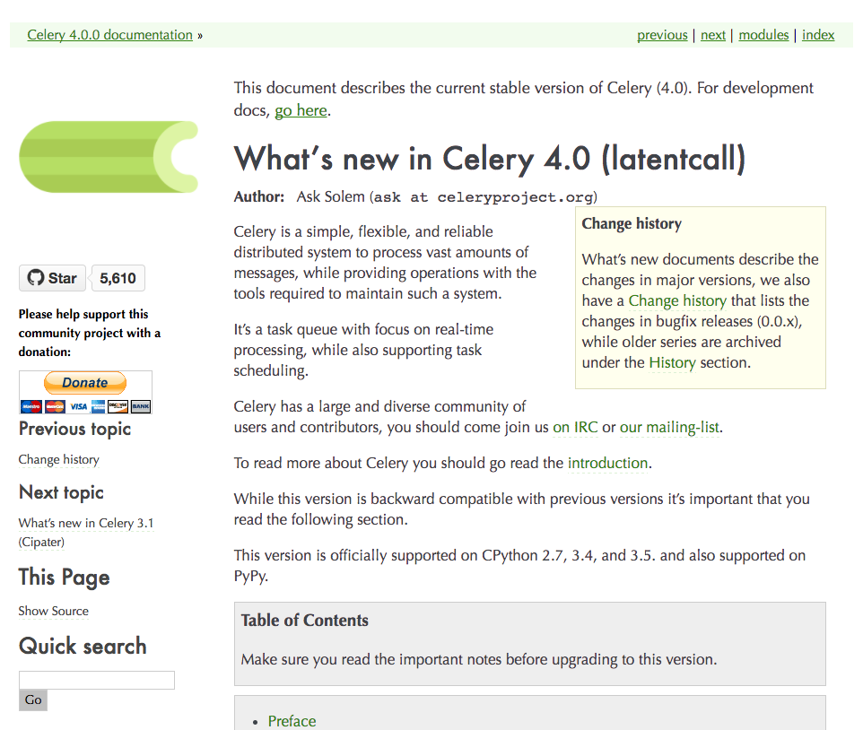

지난 11월 11일에 celery 4.0이 나왔습니다. (빼빼로 데이 기념!)

주요 변경사항을 요약해보면 다음과 같습니다.
Python 2.6 이하 지원 중단
Celery 4.x는 파이썬 2를 지원하는 마지막 메이저 버전입니다. Celery 5.0 부터는 Python 3.5 이상만 지원할 예정이라고 하네요.
(Celery 4.x는 Python 2.7, 3.4, 3.5를 지원하며, Celery 3.x는 Python 2.6도 지원합니다.)
Django 1.8 이상 필요, 1.9 이상 권장
Django에서 Celery 4.x를 사용하려면 Django 1.8 이상이 필요합니다.
또한, 새로 추가된 transaction.on_commit 기능을 사용하려면 Django 1.9 이상을 사용해야한다고 하네요.
지원 중단 플랫폼
- MS Windows
- Jython
삭제된 기능
celery.task.http- Task에서 에러 발생시 이메일 발송하던 기능
celery.contrib.batches
broker 지원 중단
* 표시: result backend로는 사용할 수 있습니다.
- Django ORM
* - SQLAlchemy
* - CouchDB
* - IronMQ
- Beanstalk
설정 이름들이 소문자로 변경
예를 들어 CELERY_MAX_CACHED_RESULTS 같은 설정 이름이 result_cache_max로 바뀌었습니다. (더 보기)
기본 시리얼라이저가 Json으로 변경
pickle에서 Json으로 바뀌었습니다.
Task를 상속한 클래스가 자동으로 등록되지 않음
이전에는 Task를 상속한 클래스가 태스크로 자동 등록되었지만, 앞으로는 다음과 같이 직접 등록해야 합니다.
app.tasks.register(CustomTask())
태스크 전달인자 개수 확인
태스크에 전달한 인자 개수가 다른 경우 TypeError 예외가 발생합니다.
몇몇 콘솔용 바이너리가 사라집니다.
- celeryd (대신 celery worker 사용)
- celerybeat (대신 celery beat 사용)
- celeryd-multi (대신 celery multi 사용)
이 외에도 다양한 새 기능이 추가되었으니 변경사항 문서를 확인해보세요. :)